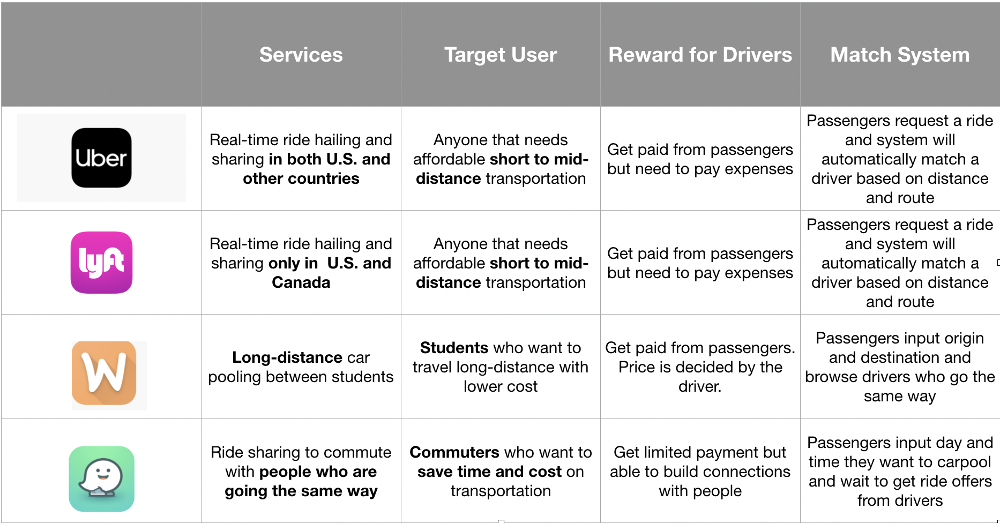
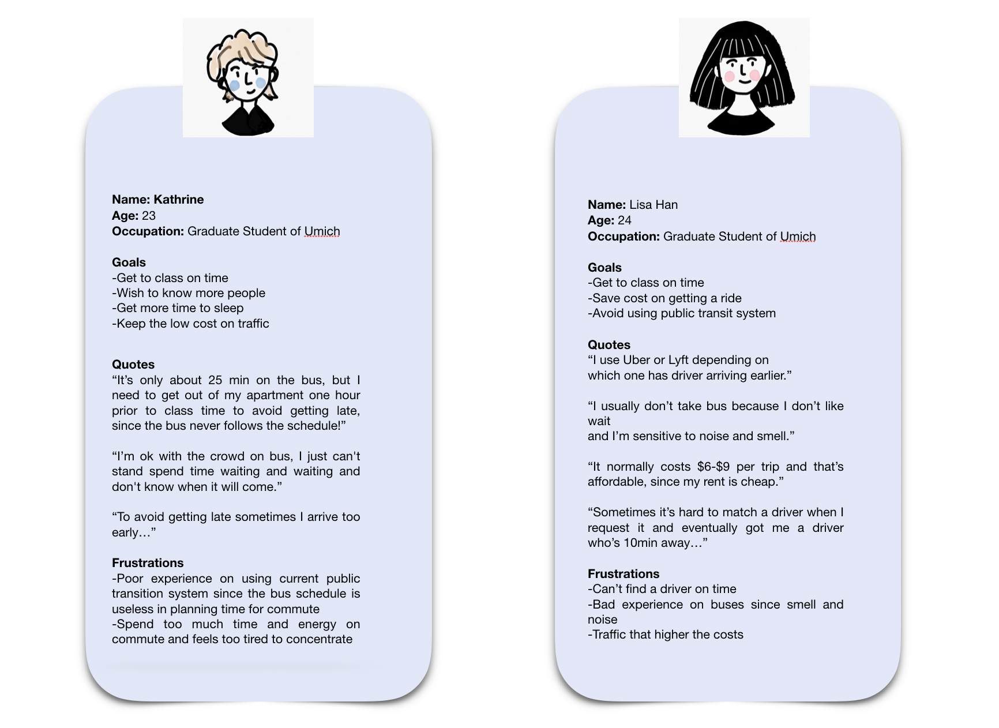
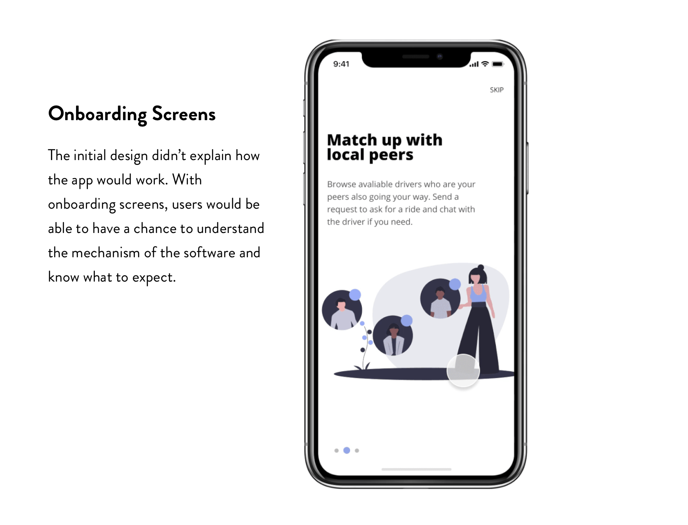
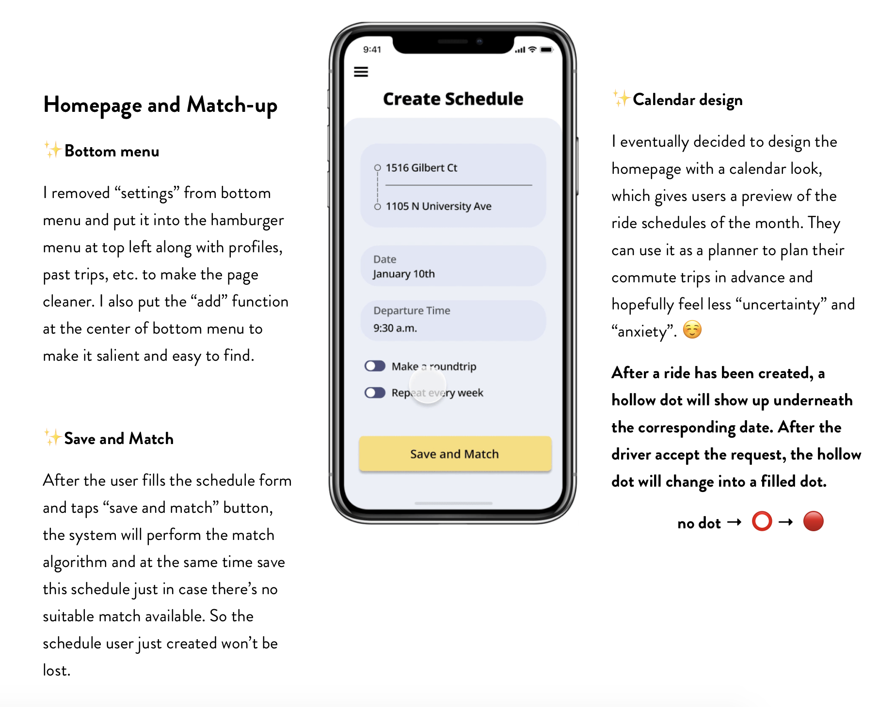

To understand how ride sharing is currently being addressed by other applications, I conducted comparative analysis for four similar applications that are currently active in market, including Uber, Lyft, Wheeli and Waze Carpool.

I developed user personas based on my interview data. My primary target audiences are the students who live off campus without a car, no matter whether they are currently suffering from the public transit system, or just the traffic issue due to too many pedestrians and cars in the area. Not only people who doesn’t have a car.

After the interviews with potential users, with empathy to all the negative emotions that these students are currently experiencing, I made the decision that my application solution will not only serve as an alternative option to commute, but also try to help alleviate the anxiety and stress that uncertainty of commute process bring to the students.

